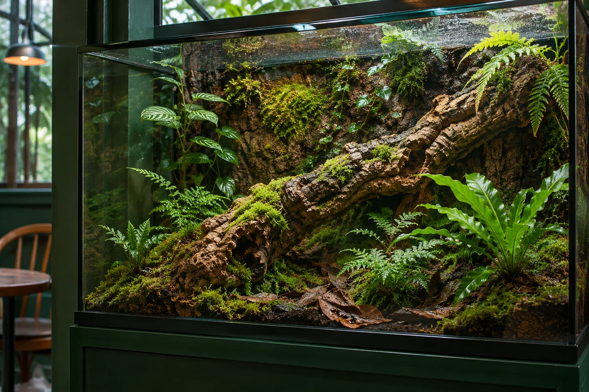

Four kinds of gecko and two kinds of snake each have their own terrarium. Select a photo to enlarge it. Use the buttons, arrow keys or a swipe to browse.
Look for reddish-brown markings near the tail. This resident can only be viewed through the glass.

Terrarium · AI-generated image
Ask staff before interacting.
Staff will decide whether a reptile is ready to interact and stay with you throughout. Please do not open enclosures, feed the animals, tap the glass or use flash photography.
Keep food and drinks in the seating area. Wash your hands with soap and running water after leaving the viewing area and before eating. Children under five may watch through the glass with an adult.
Wednesday through Monday, noon–8 p.m. Closed Tuesdays.
Ground floor, No. 6, Lane 18, Muying Road, Muying District, Qingxian City. Walk about 8 minutes from Exit 2 of Qingxian MRT Station, or 3 minutes from the Muying Road bus stop.
There is no dedicated parking at the café. Muying Parking Lot is about 4 minutes away on foot.
Desserts, books and supplies
Minimum spend is NT$180 per person across drinks and desserts. Latte NT$170, brown sugar oat milk tea NT$160, caramel custard NT$120 and lemon pound cake NT$130. Outlets are available at seats along the wall.
Browse reptile guides in the café. Waterproof stickers, reptile water dishes, bark, akadama clay and bedding are available at the counter.
Saturday reptile keeper meetup
Every Saturday, 3–5 p.m. Share care notes and terrarium setups. Tell a staff member if you would like to join, and leave your own reptiles at home.
The café, address, transit details and prices are fictional. All photographs are AI-generated.